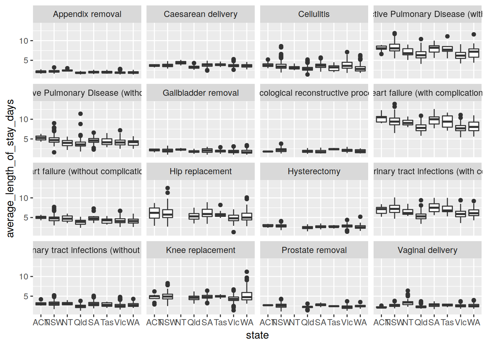

Last updated: 2019-05-15
Checks: 5 1
Knit directory: tutorials2-4/
This reproducible R Markdown analysis was created with workflowr (version 1.3.0.9000). The Checks tab describes the reproducibility checks that were applied when the results were created. The Past versions tab lists the development history.
Great! Since the R Markdown file has been committed to the Git repository, you know the exact version of the code that produced these results.
Great job! The global environment was empty. Objects defined in the global environment can affect the analysis in your R Markdown file in unknown ways. For reproduciblity it’s best to always run the code in an empty environment.
The command set.seed(20190513) was run prior to running the code in the R Markdown file. Setting a seed ensures that any results that rely on randomness, e.g. subsampling or permutations, are reproducible.
Nice! There were no cached chunks for this analysis, so you can be confident that you successfully produced the results during this run.
Great! You are using Git for version control. Tracking code development and connecting the code version to the results is critical for reproducibility. The version displayed above was the version of the Git repository at the time these results were generated.
Note that you need to be careful to ensure that all relevant files for the analysis have been committed to Git prior to generating the results (you can use wflow_publish or wflow_git_commit). workflowr only checks the R Markdown file, but you know if there are other scripts or data files that it depends on. Below is the status of the Git repository when the results were generated:
working directory clean
Note that any generated files, e.g. HTML, png, CSS, etc., are not included in this status report because it is ok for generated content to have uncommitted changes.
These are the previous versions of the R Markdown and HTML files. If you’ve configured a remote Git repository (see ?wflow_git_remote), click on the hyperlinks in the table below to view them.
| File | Version | Author | Date | Message |
|---|---|---|---|---|
| html | 3d0c34a | Dennis Wollersheim | 2019-05-15 | Build site. |
| Rmd | 82bf316 | Dennis Wollersheim | 2019-05-15 | wflow_publish(“analysis/tutorial2.Rmd”) |
| html | 82bf316 | Dennis Wollersheim | 2019-05-15 | wflow_publish(“analysis/tutorial2.Rmd”) |
| html | f2dc4f1 | Dennis Wollersheim | 2019-05-15 | Build site. |
| Rmd | f2d8c4d | Dennis Wollersheim | 2019-05-15 | wflow_publish(“analysis/tutorial3.Rmd”) |
| html | 42de1f0 | Dennis Wollersheim | 2019-05-15 | Build site. |
| Rmd | 2a92cfa | Dennis Wollersheim | 2019-05-15 | wflow_publish(“analysis/tutorial3.Rmd”) |
R has many ways to get data. This tutorial will demonstrate how importing data from Excel, and also, directly from a Postgres database. Create a new RScript file for this tutorial.
To import data from Excel, first, we need some Excel data. [https://www.myhospitals.gov.au/excel-datasheets/myhospitals-average-length-of-stay-data.xlsx] (Here is an Excel dataset containing hospital length of stay data). Download it and then upload it to Rstudio server.
New File Menu
| Version | Author | Date |
|---|---|---|
| 04acb0e | Dennis Wollersheim | 2019-05-15 |
We can load data from Excel to R directly from the command line, but Rstudio has a wizard that makes it easier. Left click on your uploaded Excel file, and choose Import Dataset.
How to start importing Excel files
| Version | Author | Date |
|---|---|---|
| 04acb0e | Dennis Wollersheim | 2019-05-15 |
In the Import Excel Data dialog box, click on the Update button (top right). You will note that the actual data starts on line 15, so in the Skip: box, enter 15.
We could just press ok and import the data, but we want to be able to replicate our work, so copy everything in the Code Preview: window, Cancel the import, and paste the resulting lines into your R file.
Import Excel Dialog box
| Version | Author | Date |
|---|---|---|
| 04acb0e | Dennis Wollersheim | 2019-05-15 |
The copied code is here:
library(readxl)
myhospitals_average_length_of_stay_data <- read_excel("myhospitals-average-length-of-stay-data.xlsx", skip = 15)New names:
* `` -> ...8
* `` -> ...10
* `` -> ...12
* `` -> ...14
* `` -> ...16
* … and 1 more problemView( myhospitals_average_length_of_stay_data )Data from Excel is often quite messy. For example, is is best if the field names are lowercase, with no spaces, and the field names of the hospitals dataset do not comply.
R has tools to clean this. First, we standardise the field names, using the clean_names function of the janitor package. Then, eliminate the empty columns using janitor’s remove_empty function, and put the resulting cleaned up dataset into the avg_los tibble. As usual, we will need the tidyverse library.
library(tidyverse)── Attaching packages ────────────────────────────────── tidyverse 1.2.1 ──✔ ggplot2 3.1.1 ✔ purrr 0.3.2
✔ tibble 2.1.1 ✔ dplyr 0.8.0.1
✔ tidyr 0.8.3 ✔ stringr 1.4.0
✔ readr 1.3.1 ✔ forcats 0.4.0 ── Conflicts ───────────────────────────────────── tidyverse_conflicts() ──
✖ dplyr::filter() masks stats::filter()
✖ dplyr::lag() masks stats::lag()library( janitor )
avg_los <-
myhospitals_average_length_of_stay_data %>%
clean_names () %>%
remove_empty ('cols')When readxl imported the data, the numeric columns were imported as type character. If the data is character, we cannot plot it. Why are these columns character?
avg_los %>%
count( total_number_of_stays, sort=TRUE)# A tibble: 1,041 x 2
total_number_of_stays n
<chr> <int>
1 <5 7009
2 5 928
3 6 789
4 8 667
5 7 630
6 9 524
7 10 510
8 12 442
9 11 438
10 13 399
# … with 1,031 more rowsThis column was imported as character because <5 is not a number! We will force R to convert these columns to numbers, using as.numeric function. The <5 rows will be converted to NA, short for not applicable. NA values are generally ignored.
avg_los %>%
mutate( total_number_of_stays = as.numeric( total_number_of_stays ) ) %>%
mutate( number_of_overnight_stays= as.numeric( number_of_overnight_stays) ) %>%
mutate( percentage_of_overnight_stays= as.numeric( percentage_of_overnight_stays) ) %>%
mutate( average_length_of_stay_days= as.numeric( average_length_of_stay_days) ) %>%
mutate( peer_group_average_days= as.numeric( peer_group_average_days) ) %>%
mutate( total_overnight_patient_bed_days= as.numeric( total_overnight_patient_bed_days) ) %>%
{ . } -> avg_los_numericNow that we have cleaned the data, we explore it. glimpse gives an overview. You can zoom into selected columns using the tools you already know, such as count and distinct.
glimpse( avg_los_numeric )Observations: 30,021
Variables: 12
$ hospital <chr> "Albury Wodonga Health [Albury …
$ state <chr> "NSW", "NSW", "NSW", "NSW", "NS…
$ local_hospital_network_lhn <chr> "Albury Wodonga Health", "Albur…
$ peer_group <chr> "Large hospitals", "Large hospi…
$ time_period <chr> "2011–12", "2012–13", "2013–14"…
$ category <chr> "Cellulitis", "Cellulitis", "Ce…
$ total_number_of_stays <dbl> 111, 116, 141, 155, 210, 196, 1…
$ number_of_overnight_stays <dbl> 92, 98, 115, 123, 166, 155, 108…
$ percentage_of_overnight_stays <dbl> 0.83, 0.84, 0.82, 0.79, 0.79, 0…
$ average_length_of_stay_days <dbl> 3.9, 3.3, 3.1, 2.5, 2.6, 2.7, 5…
$ peer_group_average_days <dbl> 3.7, 3.5, 3.3, 3.2, 3.0, 3.0, 4…
$ total_overnight_patient_bed_days <dbl> 356, 326, 351, 306, 431, 418, 6…avg_los_numeric %>%
count( state )# A tibble: 8 x 2
state n
<chr> <int>
1 ACT 191
2 NSW 9478
3 NT 355
4 Qld 5737
5 SA 3523
6 Tas 356
7 Vic 6780
8 WA 3601The following is a sample graph, showing the average LOS days as a boxplot, for the range of hospitals in each state, for each category of service.
avg_los_numeric %>%
ggplot( ) +
geom_boxplot( aes( x=state, y=average_length_of_stay_days ) ) +
facet_wrap( ~category )Warning: Removed 19770 rows containing non-finite values (stat_boxplot).
| Version | Author | Date |
|---|---|---|
| 42de1f0 | Dennis Wollersheim | 2019-05-15 |
R can directly access postgres databases using the RPostgreSQL library. Like Tableau, R passes SQL queries directly to the database, and recieves the data back.
Make sure you disconnect the connection ( dbDisconnnect( con ) ) when you are finished retrieving the query ( dbGetQuery ), because the server has a limited pool of connections.
Note, dbGetQuery returns a data.frame, which is not quite as useful as a tibble. We transform it to tibble.
query <- "
SELECT *
FROM admission
WHERE age_years < 10 AND sex_id=1
"
library("RPostgreSQL")
con <- dbConnect(dbDriver("PostgreSQL"),
dbname = 'vaed_sample',
host = "himsql7.latrobe.edu.au", port = 5432,
user = "dewollershei-test", password = "healthGuru")
young_men <- dbGetQuery( con, query ) %>% as.tibble()
#
young_men# A tibble: 596 x 14
admission_id sex_id age_years age_mths age_days los sameday_id weight
<int> <int> <int> <int> <int> <int> <chr> <int>
1 21011956 1 1 -999 NA 1 N NA
2 21015687 1 0 0 0 2 N 2960
3 21016252 1 1 -999 NA 1 Y NA
4 21018993 1 7 NA NA 1 Y NA
5 21020831 1 0 0 0 2 N 2630
6 21022020 1 0 0 0 26 N 1450
7 21022024 1 0 0 0 2 N 4095
8 21025415 1 0 0 0 2 N 3600
9 21027405 1 0 9 274 1 Y 9500
10 21037045 1 5 NA NA 1 Y NA
# … with 586 more rows, and 6 more variables: adm_source_id <chr>,
# adm_type_id <chr>, care_type_id <chr>, sep_mode_id <chr>, drg <chr>,
# postcode_id <dbl>#
dbDisconnect( con )[1] TRUE